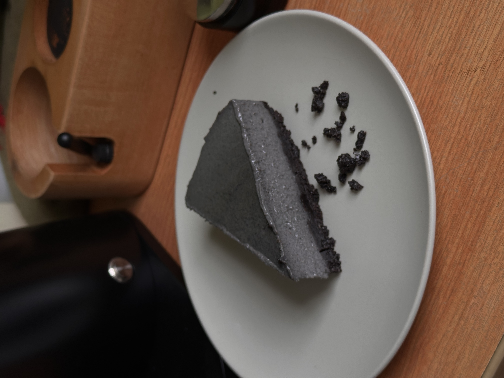

Back to home
Tofu Cheesecake Recipe

Description
This is my version of an almost vegan version of a cheesecake recipe with a black sesame twist.
Ingredients
- 450g silken tofu
- 180g plant milk
- 100g sugar
- 75g ground black sesame, or paste
- 75g nut butter
- 3 tbsp lemon juice
- 5g starch
- 3g agar powder
- a pinch of salt
- 250g crushed oreos
- 70g melted butter
Steps
- Combine crushed oreos and melted butter, then pack tightly into the bottom of a baking pan/container. Refrigerate for 30 mins.
- Combine all ingredients except starch/agar in blender. Taste test and add more sugar/lemon juice/black sesame if necessary.
- Once satisfied with taste, add starch/agar and blend again. Transfer to deep cooking pot.
- Warm on low heat until mixture starts to form bubbles, while continuously mixing. Once bubbles form, turn off heat and stir for 2-3 minutes while it cools.
- Pour warm mixture into the pan, use a spatula/scraper to flatten the top of the mixture.
- Refrigerate for at least 3 hours, or preferably overnight.